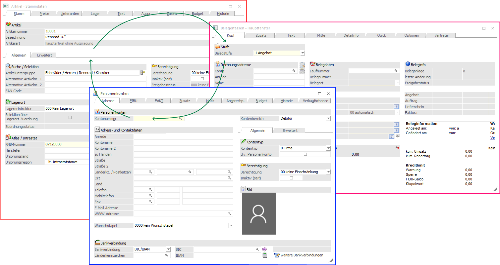
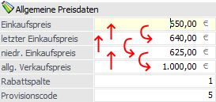
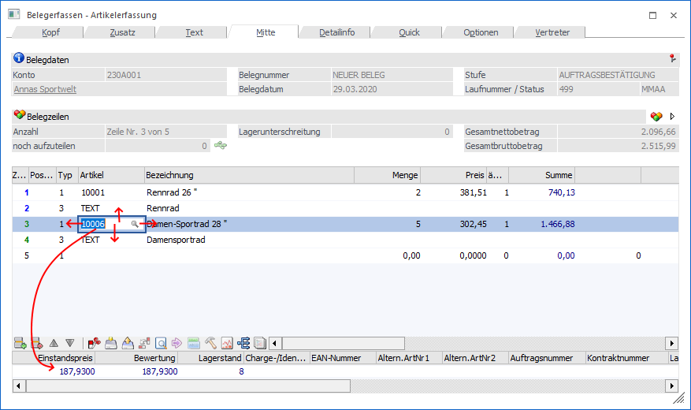

Das Bewegen zwischen den einzelnen Eingabefeldern oder Programmfenstern in der WinLine ist sehr einfach. Zum einen kann immer die Maus genutzt werden, zum anderen stehen viele Hilfreiche Tastaturbefehle zur Verfügung.
Fensterwechsel

Ø STRG + TAB
Mit der Tastenkombination STRG + TAB kann man innerhalb einer Applikation zwischen den geöffneten (aktiven) Programmfenstern wechseln.
Bewegung bei Eingabefelder

Ø TAB / RETURN (Enter) / Pfeil-nach-Unten
Durch Eingabe von TAB, RETURN (Enter) oder die Pfeil-nach-Unten-Taste gelangt man in das nächste Eingabefeld.
Ø SHFT + TAB / Pfeil-nach-Oben
Mit der Tastenkombination SHIFT + TAB oder mit der Pfeil-nach-Oben-Taste kann man Feld zurückspringen.
Navigation in einer Tabelle

Die Navigation innerhalb einer Tabelle erfolgt nach einem sehr identischen Prinzip.
Ø RETURN (Enter)
Mit der RETURN-Taste (Enter) wird immer zum jeweils nächsten Feld gewechselt, wobei der Wechsel immer nach rechts erfolgt. Wird die letzte Spalte der Zeile mit RETURN (Enter) bestätigt, wird in die erste Spalte der nächsten Zeile gewechselt.
Ø Pfeil-nach-Rechts
Mit der Pfeil-nach-Rechts-Taste wird in die jeweils nächste rechte Spalte gewechselt. Ist die letzte Spalte erreicht, wird in die erste Spalte der nächsten Zeile gewechselt.
Ø Pfeil-nach-Links
Mit der Pfeil-nach-Links-Taste wird in die jeweils linke Spalte gewechselt. Ist die erste Spalte erreicht, wird in die letzte Spalte der vorherigen Zeile gewechselt (sofern man sich nicht in der ersten Zeile befindet).
Ø Pfeil-nach-Unten
Mit der Pfeil-nach-Unten-Taste kann in die jeweils nächste Zeile gesprungen werden, wobei man immer in der gleichen Spalte bleibt. Sollte man allerdings die letzte Zeile erreicht haben, dann wird eine neue Zeile eröffnet und man befindet sich dort in der ersten Spalte.
Ø Pfeil-nach-Oben
Mit der Pfeil-nach-Oben-Taste kann in die jeweils vorige Zeile gesprungen werden, wobei man immer in der gleichen Spalte bleibt.
Ø TAB
Mit der TAB-Taste wird die Tabelle verlassen, weil die gesamte Tabelle als Element betrachtet wird (hier kann es allerdings zu Ausnahmen kommen, nämlich dann, wenn die Eingabegeprüft werden muss [ist das Konto/der Artikel vorhanden] - in diesem Fall bewirkt die TAB-Taste das gleiche wie die Enter-Taste).